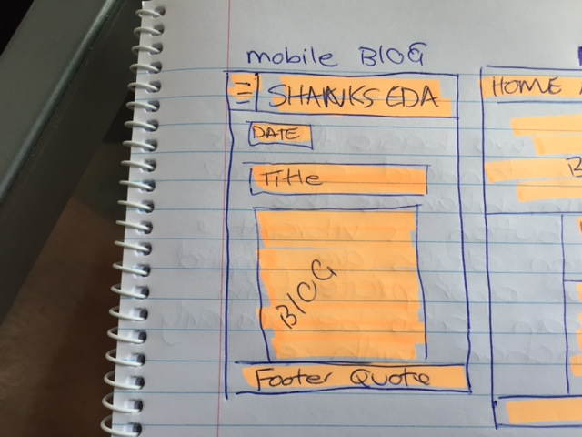

Web Design

Web Design
Hi everyone! Today, more people are using smartphones, iPads and tablets than ever before. And more than ever these users are accessing the web straight from their phone or tablet. The problem is that these screens are smaller than the usual laptop or desktop that old websites were designed for. That's where responsive sites were developed. To make webpage's look good and to be user friendly for phones, tablets, laptops and PC desktops! If you are on your laptop and go on to a well known site e.g. YouTube you will notice the layout has a search bar at the top, a navigation tab on the left and recommended videos in grids below. Nice layout right? OK now let's try something. Grab the riight side of the page with your mouse and drag it left. Almost automaticaly you will notice the navigation bar on the left dissapears. That's responsive design! It takes away the nav bar as the page is too cluttered at the new size. If you continue to make the page smaller more features will dissapear to make the page more enjoyable to use on smartphone and tablet.
On to mobile first design. Mobile first design is a technique developers usse when they are first designing a website. They will design it from the beginning for how to will look and work at a small screen size. From there they will work their way out in screen size and add addition features as they go. It is important that developers do this as it is easier to add things to a site than it is to take them away!
A framework is a standardized set of concepts, practices and criteria for dealing with a common type of problem, which can be used as a reference to help us approach and resolve new problems of a similar nature.Most websites share a very similar (not to say identical) structure. The aim of frameworks is to provide a common structure so that developers don’t have to redo it from scratch and can reuse the code provided. In this way, frameworks allow us to cut out much of the work and save a lot of time. To summarize: there’s no need to reinvent the wheel. Those were the pro's! Some con's are that there is a lot of let over code, meaning the speed on your webpage won't be optimal. Also you don't learn to do it yourself as you just copy paste the frame work and it's CSS into the header!
Now on to the fun stuff and some of my interesting illustraive skills! LOL! Wireframes is a technical term for drawing what you want your website to look like before making it. My wireframes for this website are below. I drew these prior to the relaunch of this website. They look pretty close right!
My first wireframe was for what I wanted my homepage to look like in mobile view. The header isn't exactly how I wanted it as I think I need JavaScript for that!
This wireframe is for the home page from a desktop view!
This wireframe is for the blog page from a mobile view!
This wireframe is for the blog page from a desktop view!
Did you like my drawing skills? Something to add to my work-on list I guess!! The aspect I found difficult with my wireframes was flexing my images on the index desktop view. It took my a while, plus some help, to get them into three columns and then to move back into one for the mobile view, or should I say move from one column in to three when expanding! Mobile-first design of course!
Peace.